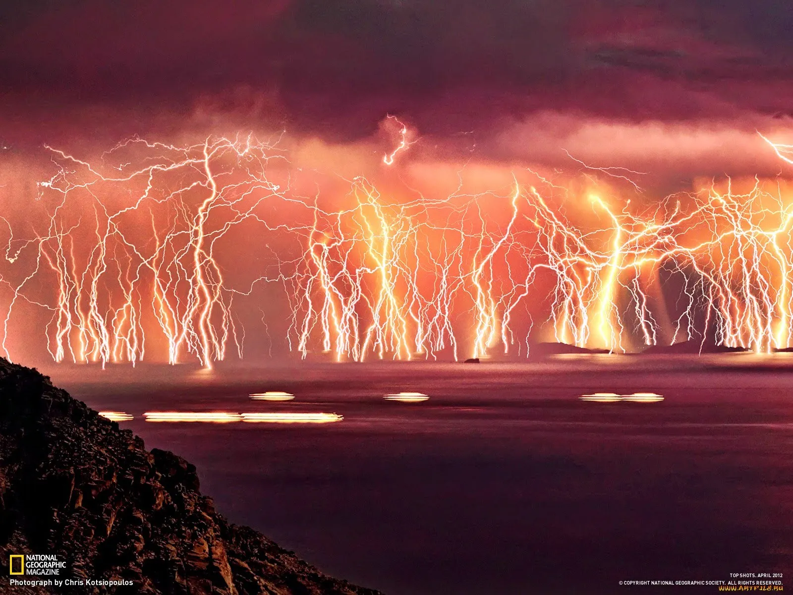
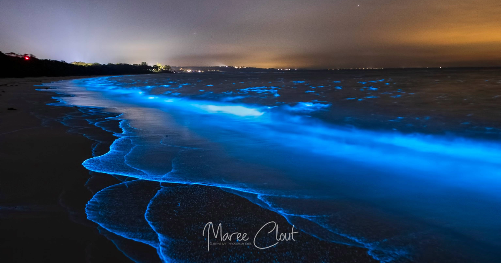
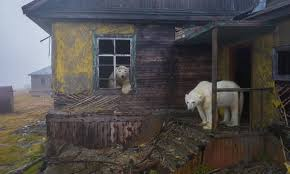

#LoÚltimoEnLaNaturaleza

Titular
29/10/2025Este fenómeno ocurre en la cuenca del Lago de Maracaibo, Venezuela: tormentas de relámpagos tan intensas que pueden ocurrir hasta 260 noches al año.

Título: Bioluminiscencia marina (Playas que brillan en la noche)
29/10/2025En ciertos lugares como la isla Vieques en Puerto Rico y otros destinos, microorganismos en el agua emiten luz cuando se agitan, lo que produce un efecto de “agua con estrellas”.

Titulo: Blood Falls (La catarata que parece sangre en la Antártida)
29/10/2025Esta catarata en la Antártida parece derramar sangre, pero la explicación es geológica: agua rica en hierro que al contactarse con el aire se oxida toma un color rojo-intenso.
